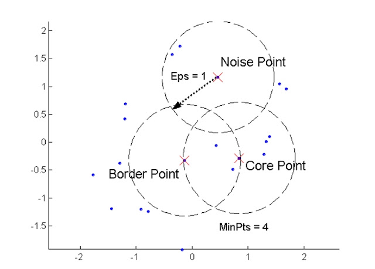
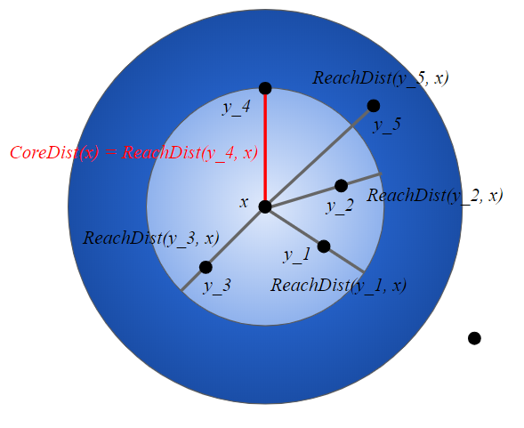

第 7 章 找出點事件的群聚熱區
7.1 找出群聚的目的
7.1.1 群聚熱區的意義
尋找估傳的點事件的異常情況，以及與環境的交互反應，並可進一步找出早成群聚的原因。
7.2 找出熱區的方法
7.2.1 呈現群聚的連續面：核密度估計
- 核密度估計的計算方式（kernel density estimation, KDE）
- 將研究區分成很多面積相等的小方格
- 以其中一個小方格當圓，以r為半徑畫圓
- 計算圓裡面的點事件個數，以此可以算出密度
算式：
\[ \hat{\lambda}_p = \frac{number \ of \ [S \in C(p,r)]}{\pi r^2} \]
- \(C(p,r)\) 表示以小方格為圓心後所畫的圓
將所有網格都計算完畢，就可以得到一個群聚趨勢的連續面，使用核密度估計（kernel density estimation）產生的是場域資料（field），也就是網格資料（raster data），也就是說，核密度估計（kernel density estimation）可將離散資料轉換為連續資料。
- 核密度估計的權重參數
- 為了更加細緻的處理距離遞減的效應，會在距離圓心越遠的點事件進行權重的分配與加總，讓趨勢更加平滑，公式如下：
\[
f(x,y) = \frac{1}{nh^2}\sum^{n}_{i = 1}k\frac{di}{h}
\]
- \(f(x,y)\) 為該網格的密度估計值；
- \(n\) 為原點內事件的個數；
- \(h\) 為帶寬；
- \(di\) 為計算事件\(i\)到該網格之間的距離；
- \(k(\frac{di}{h})\) 為以\(\frac{di}{h}\) 為變數的核密度的權重函數，為非遞增函數，表示距離越遠值越小
7.2.2 機器學習的分群演算法：DBSCAN 與 OPTICS
7.2.2.1 DBSCAN（Density-based spatial clustering of applications with noise）
- 需要事先設定2個參數：
- (1)\(\epsilon\) ：點事件的搜尋半徑；
- (2)minPts：每個群最少應該要包含的點數量。
- (1)\(\epsilon\) ：點事件的搜尋半徑；
- 核心操作理念：
- 隨機找一個點當圓心，以\(\epsilon\) 為半徑畫一個圓當搜尋範圍，並計算圓裡面的點事件個數。
- 隨機找一個點當圓心，以\(\epsilon\) 為半徑畫一個圓當搜尋範圍，並計算圓裡面的點事件個數。
- 點事件數量若大於 minPts 被選定的點就是核心點，反之就暫時被當成雜訊點
- 點事件數量若大於 minPts 被選定的點就是核心點，反之就暫時被當成雜訊點
- 若為核心點，選擇與該點有直接連結（directly density connected）的點重複步驟(1)、(2)。
- 若為核心點，選擇與該點有直接連結（directly density connected）的點重複步驟(1)、(2)。
- 若暫定為雜訊點，則再隨機選擇其他點重複步驟(1)(2)。
- 若暫定為雜訊點，則再隨機選擇其他點重複步驟(1)(2)。
- 經過 (1)、(2) 這兩步的點，就是被走訪 (visted) 過。
＊直接連結（directly density connected）：兩點互相落在彼此的搜尋圈內，兩點的關係就是直接連結。
＊間接連結（density connected）：兩點沒有落在彼此的搜尋圈內，但是可以透過其他的點連接。
- 經過 (1)、(2) 這兩步的點，就是被走訪 (visted) 過。
- 對所有的點進行以上都被走訪過後，可以將點分為以下三種：
- 核心點（core point）：該點的搜尋範圍內有 minPts 以上的點數量。
- 核心點（core point）：該點的搜尋範圍內有 minPts 以上的點數量。
- 邊緣點（border point）：該點的搜尋範圍內點數量少於 minPts，但是該點有被包含在其他核心點的範圍內。
- 邊緣點（border point）：該點的搜尋範圍內點數量少於 minPts，但是該點有被包含在其他核心點的範圍內。
- 雜訊點（Noise）：該點的搜尋範圍內點數量少於 minPts，也不被其他核心點包含。
- 雜訊點（Noise）：該點的搜尋範圍內點數量少於 minPts，也不被其他核心點包含。

圖片來源：http://123android.blogspot.com/2012/01/28dec11-data-mining.html
然而，DBSCAN 並不能區分密度的階層性或者是結構性，就只能判定是否為熱點。若想要知道分布的階層性，建議可以使用以下介紹的方法 OPTICS。
7.2.2.2 OPTICS（Ordering points to identify the clustering structure）
- 一樣需要事先設定2個參數：
- (1)\(\epsilon\) ：點事件的搜尋半徑；
- (2)minPts：每個群最少應該要包含的點數量。
- (1)\(\epsilon\) ：點事件的搜尋半徑；
OPTICS 是 DBSCAN 的延伸，並新加入核心距離（core distance）與可達距離（reachability distance ）這兩個概念。 值得注意的是，OPTICS 無法直接取得分群結果，而是提供有助於判斷群聚結構的資訊，但只要再使用 DBSCAN 之類的分群方法，就可以找出不同密度的點群聚。
- 新加入的概念：
- 核心距離（core distance；\(\epsilon'\)）：任一點為圓心，能夠包含 minPts 個點（包含自己）的最短距離，若\(\epsilon'\leq \epsilon\)，則該點為核心點；
- 可達距離（reachability distance ）：(需要核心點才有)核心點至在他搜尋半徑（\(\epsilon\)）內尚未走訪過的其他點的直線距離，若核心點與尚未走訪過的點距離小於核心距離（\(\epsilon'\)），可達距離為核心距離，若大於核心距離，可達距離就是兩點之間的距離。
- 可達分數（reachability score ）：一個點就會紀錄很多不同的可達距離，演算法會記錄最小的可達距離，稱為可達分數。

資料來源：https://medium.com/ai-academy-taiwan/clustering-method-6-d0c207daced6
- 核心操作理念：
- 判斷是否為核心點，也就是計算核心距離（\(\epsilon'\)）；
- 判斷是否為核心點，也就是計算核心距離（\(\epsilon'\)）；
- 拜訪各個核心點，重複以下三個步驟：
- 紀錄可達分數。
- 選擇可達距離最短的點當作下一個造訪點。
- 若在搜尋範圍內的點都已經造訪過了，就隨機挑選下一個點。
以各點的走訪順序為x軸，可達分數為y軸，可畫出如下圖的可達距離圖(reachability plot)每一個凹谷都可以被視作一個群聚，辨別方式有三種：
- 拜訪各個核心點，重複以下三個步驟：
- 用看的；簡而言之就是用看的。
- 定標準值；訂定一個可達分數閾值（門檻值）， 該值以下的凹谷為群聚，該值以上的點視為雜訊，此方法類似DBSCAN的概念，就是給一個定值（misPts）判斷。
- 斜率變化：必用凹谷前後的斜率變化來看，若斜率越大（越陡），表示群聚現象越明顯，斜率值可自訂，若超過即為群聚。
7.3 影響群聚判斷的因素
7.3.1 人口基數分布
熱區表示某個點事件在某一區域有異常頻繁出現的現象，因此也要和其他因素互相比較，例如竊盜案在人口密集的的地方發生的事件量本來就會比較多，若一個地方人口稀少但是竊盜頻傳，才算是熱區。
比較點事件群聚與人口基數有3種方法：
- 把人口密度作為底圖，並畫上點事件分布點圖
- 可使用檢定方法。
- 點事件以空間單元加總，搭配人口基數彙整統計，在計算地理術性的群聚找出群聚。
DBSCAN：
https://kanchengzxdfgcv.blogspot.com/2017/08/r-dbscan.html
OPTIC：
https://medium.com/ai-academy-taiwan/clustering-method-6-d0c207daced6
https://www.gushiciku.cn/pl/2YO7/zh-tw